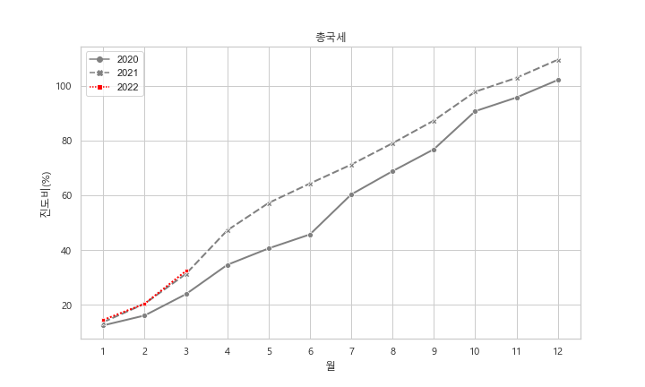
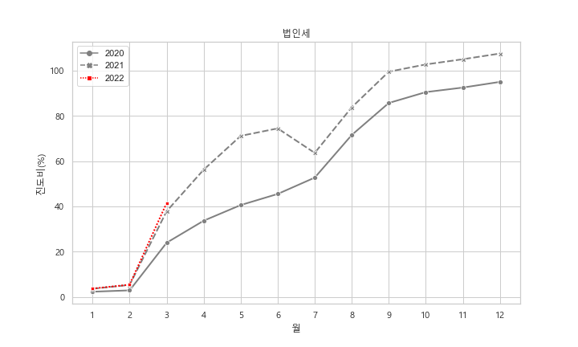
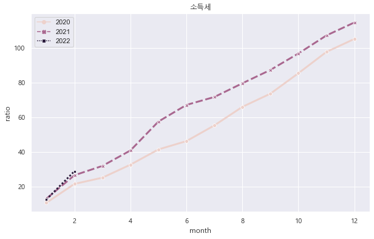

최근 기재부가 53조 추가세수에 기초하여 59조 추경을 편성한다고 발표했다.
추가세수 \(ER\) 란 예상했던 기대 세수 \(R^e\) 를 초과하는 부분으로 다음과 같이 표현할 수 있다.
\[ ER_t = \mathbf{E} [R_t-R^e_{t-1}] \]
초과세수는 사후적인 개념으로 기재부가 발표한 것은 기대 초과세수라고 표현하는 것이 더 정확하다고 할 수 있다.
기재부의 세수 예측 능력은 매우 떨어지는 편인데, 사실 어떤 모형에 기초하여 세수 예측치를 계산하는지는 거의 알려지지 않았다.
하지만 대단한 묘수가 있지는 않아 보이는 것이 엑셀에 기존 과표*평균세율 구조를 이용하거나, 당해년도에는 이른바 진도비라는 것을 사용할 것은 보지 않아도 뻔하다. 성장율과 세수증가율의 관계를 추정하여, 이른바 세수탄성치를 이용하면 아마도 양반일 듯 하다.
여하튼,올해의 세수전망도 매우 틀릴 예정이라고 발표한 것이 며칠전의 기재부의 발표이다.
근거가 되는 것은 현재까지의 세수 실적치를 나타내는 이른바 진도비이다.
진도비는 기대 총세수 중 현재까지 누적 실적이 차지하는 비중이다. 1년이 12달 이니까, 매달 대략 8~9% 정도 늘어나니, 3월 기준으로 보면 25% 정도면 정상이고, 그 보다 올라갔으면 세수 실적이 좋은 편이라고 볼 수 있다. 물론, 세목에 따라서 상반기에 집중되는 경우에는 초기 진도비가 높은 편이고, 하반기에 집중되는 경우에는 진도비가 낮은 편이라고 볼 수 있다.
여하튼, 지금까지 진도비를 과거와 비교하여 살펴보자.
먼저 총국세의 경우 대체로 선형이고, 작년과 유사한 패턴으로 초과세수가 발생하고 있음을 알 수 있다.

법인세의 경우 비선형이다. 12월 결산법인이 3,4월에 신고 및 납부를 하기 때문에 3,4월에 점프가 일어나게 된다. 분납을 허용하고 있고, 보통 반반씩 내기 때문에 3월에 점프가 일어난 만큼 4월에도 일어나게 된다. 8월은 22년도분 예납인데, 50%까지 납부할 수 있기 때문에 절반 정도의 점프가 일어난다고 보면 된다.

개인소득세의 경우는 매월 원천징수가 벌어지기 때문에 대체로 선형인 모형이다. 대기업 중심으로 대규모의 임금인상이 벌어졌기 때문에 초과세수가 작년보다도 좀 더 가파르게 발생하고 있음을 볼 수 있다.

부가가치세는 1,4,7,10월에 납부가 이루어지기 때문에 해당 월에 점프가 이루어 진다. 부가가치세는 종가세이기 때문에 인플레이션으로 인해 증가한 부분이 반영이 이루어진 것은 사실이다. 다만, 시간이 지나면 가격 인상으로 인해 소비가 줄어드는 부분이 있기 때문에 인플레로 인해 초과 세수가 크게 발생한다는 기재부의 설명은 그다지 설득력은 없다. 21년이 빠르게 출발했지만, 21년 후반기에는 크게 늘어나지는 않았음을 볼 수 있다.
여하튼, 기재부 더럽게 틀려대는데, 틀린 예측치를 만들었던 사람들은 영전을 하고 있다니 참으로 개탄스럽다.